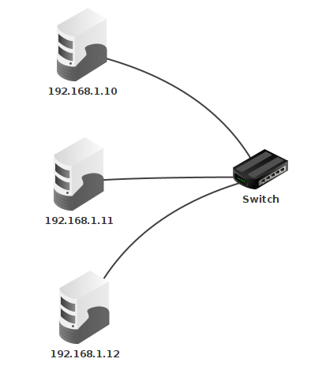
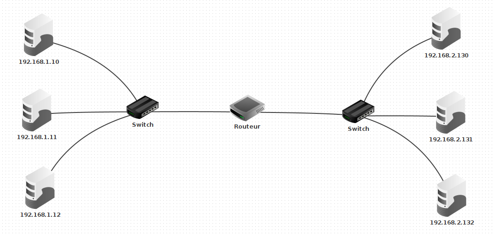

C12 Protocoles de routage
Attention
Avant de commencer ce chapitre, revoir les notions de réseau vues en classe de première. En, particulier :
- consulter l'activité 1 pour une initiation à l'utilisation du logiciel de simulation de réseau filius,
- les notions d'adresses ip,
- le diaporama de cours de ce chapitre.
Ne pas hésiter à consulter d'autres ressources sur le Web :
- Le chapitre réseau du cours de première sur le site pixees.
- Video Lumni
- Cours du lycée duparc
Activités
 Activité 1 : Adresse IP, masque
Activité 1 : Adresse IP, masque
Rappel
Deux machines ne peuvent communiquer que si elles sont sur le même réseau, c'est à dire que leurs adresses ip démarre par une partie commune. La longueur de cette partie commune est définie par le masque de sous réseau. Pour la connaître, on écrit le masque de sous réseau en binaire. Le nombre de 1 en début de masque donne la longueur de la partie commune dans les adresses IP. Par exemple le masque 255.255.254.0 donne en écriture binaire 11111111.11111111.111111110.00000000. La partie commune doit donc être de 23 bits car cette écriture débute par 23 fois le chiffre 1. Un masque de 23 bits peut se noter de façon plus concise /23 (notation cidr). Pour savoir si deux machines de ce réseau peuvent communiquer on écrit leurs adresses IP en binaire et on regarde si les 23 premiers bits sont identiques ou non.
Rappel
l'adresse du réseau s'obtient en réalisant un et logique entre l'adresse IP d'un ordinateur du réseau et le masque de sous réseau.
-
Lancer Filius, un outil de simulation de réseaux, et crée un simple réseau constitué de deux ordinateurs. Dans chacun des cas suivants, prévoir si les deux ordinateurs peuvent communiquer et le vérifier à l'aide d'une commande
pingIP ordinateur 1 Masque Ordinateur 1 IP ordinateur 2 Masque ordinateur 2 203.147.154.100 255.255.255.192 203.147.154.119 255.255.255.192 203.147.154.100 255.255.255.192 203.147.154.129 255.255.255.192 172.19.247.15 255.255.240.0 172.19.230.150 255.255.240.0 172.19.247.15 255.255.240.0 172.19.248.118 255.255.240.0 Aide
En cas de difficultés pour utiliser Filius, faire la première activité du cours de première.
-
Un switch sert à connecter plusieurs ordinateurs d'un même sous réseau, ainsi chez un particulier, une box internet joue le rôle de switch et permet de connecter les divers appareils de la maison (téléphone, ordinateur, imprimante, ...). Connecter trois ordinateurs au même sous réseau comme ci-dessous et vérifier à l'aide de la commande
pingqu'ils peuvent communiquer.
-
Un routeur permet d'interconnecter plusieurs sous réseau. Réaliser dans filius le réseau ci-dessous (le routeur a deux interfaces). Attribuer les mêmes adresses ip que sur le schéma et remarquer bien que les ordinateurs de droite et de gauche ne font pas partie du même sous réseau. C'est le routeur qui permet leur interconnection, pour cela il faut indiquer pour chaque machine du réseau de gauche l'adresse du routeur dans le champ passerelle et faire de même, pour chaque machine du sous réseau de droite.

Aide
En cas de difficultés, se référer à la vidéo suivante :
Activité 2 : Protocoles de routage
On peut assimiler un réseau à un graphe, les noeuds sont les routeurs et les arcs les liaisons entre ces routeurs. Par exemple :
Dans cet exemple, plusieurs chemins permettent de relier A à C. Un protocole de routage est un mécanisme permettant de choisir l'un de ces chemins. Pour mettre en place un protocole de routage, chaque routeur doit être doté d'une table de routage qui indique le routeur suivant selon la destination du paquet.
-
Le protocole rip : Routing Information Protocol
-
Sachant que dans ce protocole, on tente de minimiser le nombre de routeurs traversés, quel serait les chemins empruntés pour :
- relier
AetE? - relier
AetC? - relier
EetD?
- relier
-
De plus dans ce protocole, à l'initialisation, la table de routage de chaque routeur ne contient que ses voisins immédiats associés à une distance de 1. Par exemple la table de routage de
Aest :Destination Distance B 1 E 1 et celle de
Best :Destination Distance A 1 D 1 E 1 Donner à l'initialisation, les tables de routages des autres routeurs :
C,DetE. -
Les tables de routages sont mises à jour à intervalles réguliers, en effet chaque routeur consulte la table de routage de ses voisins et met la sienne à jour en conséquence. Par exemple,
Areçoit la table de routage deB, il y trouveDqui ne figure pas encore dans sa table et le rajoute donc en augmentant sa distance de 1. La table deAdevient donc :Destination Distance B 1 E 1 D (via B) 2 Le routeur
Efigure déjà dans la table avec une distance plus courte, il n'est pas mis à jour. Construire la table de routage deBaprès la première mise à jour.
-
-
Le protocole ospf
La qualité des liaisons entre différents routeurs dépend du type de connection, on peut donc représenter un réseau par un graphe pondéré. Dans l'exemple suivant, la qualité de la liason entreAetE(poids 1) est bien meilleure que celle entreAetB(poids 5)graph TD A(("A")) B(("B")) C(("C")) D(("D")) E(("E")) A-- 5 ---B A-- 1 --- E B-- 2 --- E B-- 2 --- D C-- 1 --- E C-- 4 --- D-
Sachant que dans ce protocole, on tente de minimiser le poids du chemin parcouru, quel serait les chemins empruntés pour :
- relier
AetE? - relier
AetC? - relier
EetD?
- relier
-
Cours
Vous pouvez télécharger une copie au format pdf du diaporama de synthèse de cours présenté en classe :
Attention
Ce diaporama ne vous donne que quelques points de repères lors de vos révisions. Il devrait être complété par la relecture attentive de vos propres notes de cours et par une révision approfondie des exercices.